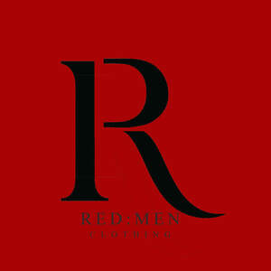

Trade Mark Journal No.2025/039 26 September 2025
UK00004259614 5 September 2025 (25)
Mark 1

Mark 2
- Class 25
- Clothing Woollen clothing Gabardines [clothing] Ready-to-wear clothing Knitwear [clothing] Furs [clothing] Kerchiefs [clothing] Bandeaux [clothing] Cashmere clothing Shorts [clothing] Veils [clothing] Muffs [clothing] Silk clothing Aprons [clothing] Boas [clothing] Jackets [clothing] Leather clothing Clothing of leather Leather (Clothing of -) Denims [clothing] Headbands [clothing] Headbands for clothing Men's clothing Oilskins [clothing] Playsuits [clothing] Foulards [clothing articles] Windproof clothing Linen clothing Mufflers [clothing] Thermal clothing Gloves [clothing] Gloves as clothing Layettes [clothing] Clothing layettes Woven clothing Visors [clothing] Garments for protecting clothing Latex clothing Capes (clothing) Embroidered clothing Nappy pants [clothing] Waterproof clothing Hoods [clothing] Clothes Parts of clothing, footwear and headgear Rainproof clothing Dance clothing Jerseys [clothing] Cowls [clothing] Slipovers [clothing] Corsets [clothing, foundation garments] Beach clothing Clothing for leisure wear Braces for clothing Drawers [clothing] Drawers as clothing Golf clothing, other than gloves Maternity clothing Trunks being clothing Braces [suspenders] for clothing / Suspenders [braces] for clothing Belts [clothing] Belts for clothing Bottoms [clothing] Knitted clothing Water-resistant clothing Clothing for skiing Collars [clothing] Handwarmers [clothing] Clothing for gymnastics Chaps (clothing) Fabric belts [clothing] Hats (Paper -) [clothing] Paper hats [clothing] Babies' pants [clothing] Athletic clothing Jackets being sports clothing Party hats [clothing] Jackets (Stuff -) [clothing] Stuff jackets [clothing] Ladies' clothing Leather belts [clothing] Weatherproof clothing Fishing clothing Quilted jackets [clothing] Pockets for clothing Casual clothing Tops [clothing] Gloves for apparel Gussets for underwear [parts of clothing] Clothing for babies.
Adeboye Adefolalu